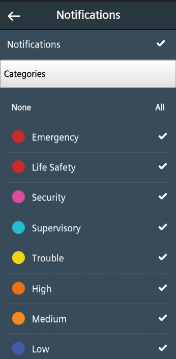
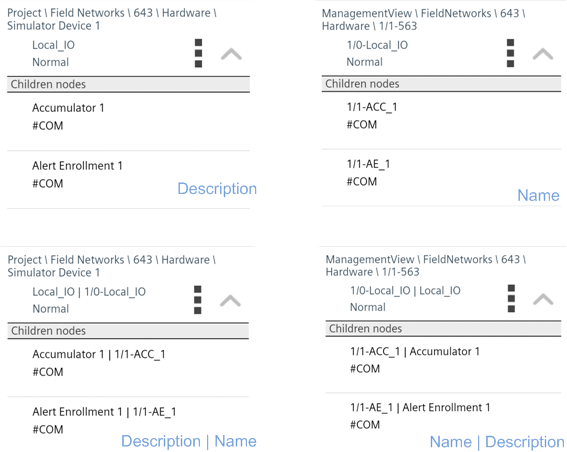
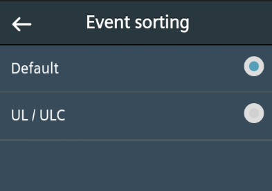
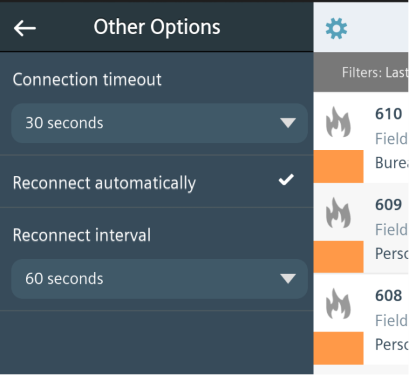

Changing Mobile App Settings
This section provides instructions for adjusting some settings of the Desigo CC mobile app.
Change the App PIN Code
The mobile app requires you to configure a PIN code to protect against unauthorized access while you are kept signed in. You can change your PIN code at any time from within the app.
- Tap Settings
 in the action bar of the app.
in the action bar of the app. - Tap Security to open the PIN panel.
- Enter the new PIN you want to set in the New Pin and Confirm new Pin fields.
- Tap Apply.
- Tap anywhere on the screen outside the PIN panel to close it and return to the app.
Filter or Deactivate Notifications
You want to receive app notifications only for events belonging to certain categories, or you want to turn off the notifications entirely.
- Tap Settings .
- Tap Notifications.
- To turn all notifications off:
a. Tap the white checkmark alongside Notifications.
b. Tap Ok to confirm, - The checkmark alongside Notifications is dimmed, you will no longer receive any notifications.
- To turn notifications back on, tap the dimmed checkmark alongside Notifications.
- The checkmark alongside Notifications turns white, and you will start receiving notifications again. Any previously set category filters are retained.
- To filter notifications by category, do one or more of the following:
- Tap one or more checkmarks to select the categories of events for which you want to receive notifications.
- Tap All to receive notifications for all event categories.
- Tap None to disable all notifications.
- You will now only receive notifications only for the selected event categories.
- When you are finished, tap the back arrow
 to close the notifications filter panel.
to close the notifications filter panel.

Label Objects by Name or Description
You can configure whether objects in the mobile app are labeled with the name, description, or both.
- Tap Settings .
- In the Settings menu, tap Object Options.
- Tap one of the buttons to select an object labeling option:
- Description: Objects are labeled only with their description (for example, Accumulator 1). This is the default setting.
- Name: Objects are labeled only with their name (for example, 1/1-ACC_1).
- Description | Name: Objects are labeled with their description, followed by the name (for example, Accumulator 1 | 1/1-ACC_1). In the path, objects are labeled only with the description.
- Name | Description: Objects are labeled with their name, followed by the description (for example, 1/1-ACC_1 Accumulator 1). In the path, objects are labeled only with the name.
- Tap the back arrow to return to the Settings menu.
- Tap anywhere on the screen outside the Settings menu to close it and return to the app.
- The objects in system browser and event list are labeled according to your selection.

Change the Sorting of Events
You can configure the order in which events display in the mobile app event list by choosing one of the following two options (Default or UL/ULC).
| Default | UL/ULC |
Events are sorted first by: | State ('to be acknowledged' on top, then 'to be reset', then 'waiting for condition') | |
second by: | Category (most severe on top, for example Life Safety before Status) | |
third by: | Date/time (most recent on top) | IN (start of alarm condition) before OUT (end of alarm) events |
fourth by: | - | Date/time (oldest on top) |
- Tap Settings.
- In the Settings menu, tap Event Sorting.
- Tap one of the buttons (Default or UL/ULC) to select a sorting option.
- Tap the back arrow to return to the Settings menu.
- Tap anywhere on the screen outside the Settings menu to close it and return to the app.

Set Server Connection Preferences
You can configure how the Desigo CC app behaves when it temporarily loses contact with the management platform server (for example, when your device moves out of range of the Wi-Fi signal, or when there are momentary glitches in the network connection).
- Tap Settings .
- Tap Other Options.

Connection Timeout
The connection timeout determines how long a disconnection must last before the Desigo CC app decides it has lost contact with the server. This acts as a filter, to prevent brief signal losses from immediately triggering a server not available message.
- Tap on the current value of the Connection timeout (for example, 30 seconds) and spin the picker wheel to change it.
- Tap Done.
Reconnect Method
You can set how Desigo CC reconnects the server after a connection times out.
- Select Reconnect automatically if you want Desigo CC to automatically try to reconnect to the server.
- Deselect Reconnect automatically if you do not want Desigo CC to automatically try to reconnect. In this case, you must manually try to reconnect by tapping the gray
Updates availablebar. (See Manually Try to Reconnect.)
Reconnect Interval
If you selected Reconnect automatically, you can set how frequently Desigo CC automatically tries to reconnect.
- Tap on the current value of the Reconnect interval (for example, 60 seconds) and spin the picker wheel to change it.
- Tap Done to confirm the new value or Cancel to go back to the old value.